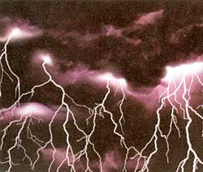

People hit by lightning suffer both extreme heat and damaging electricity from the bolt. Direct hits are not the only danger however. In open terrain, nearby strikes also can electrocute. But it is possible to survive. (Check struckbylightning.org for statistics and tips.)
The best way to avoid lightning is to take shelter. But sometimes we're caught in open terrain by sudden lightning, with no safe haven in sight. Most of us are tempted to hit the dirt. Of course, being a tall target is bad, but electricity flowing horizontally from head to foot on a person lying on the ground can be lethal.
Your best bet for survival: Crouching way down with feet together and hands off the ground. Sound a little weird (and awkward)? The answer is in the physics.
When a wandering cow is killed by nearby lightning (which strikes the ground or a lone tree), ground current traveling from the strike point is usually blamed. The main culprit is voltage: the electrical force that causes ground current to flow. Current is merely electrons bumping each other along an electrical path. The higher the voltage, the greater the current flow.
Lightning striking earth is the result of a stormy sky - which electrifies clouds with many million volts. When a bolt of lightning hits the ground or trees, the bolt sends current from the strike point (or tree base) out over a sizeable circular area. This happens because the bolt distributes a very high voltage across that surface-but just for an instant. (Close to the strike, that can be many thousands of volts per square foot!) Cows roaming the area (especially those facing directly in line with the strike point) receive a lethal jolt between their widely separated legs.
For anyone standing near a lightning strike, the distance between their feet is also critical. Humans might appear safer than cattle - yet 600 or 800 volts flowing between soggy shoes is just like stepping on the third rail of an electric railway!
During a thunderstorm, nobody should be in open terrain or under lone trees. A lone tree is the tallest electrical path in an area and, if struck, a tremendous voltage fans out from the tree's base. For a golfer near the strike, with feet 10 inches apart, it could be curtains. (Going into dense woods is somewhat better; inside an automobile is best.)
If you can't get to shelter, make yourself as small as possible and limit the amount of area you cover. So don't lie down or stand up. Become a ball instead.
|
 DON FARRAL/PHOTODISC |
|
|